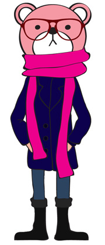
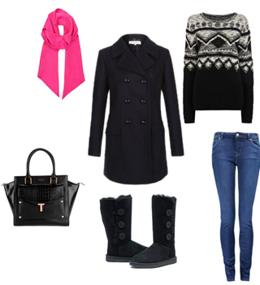
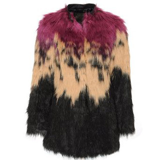
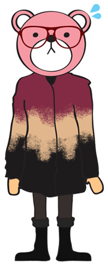
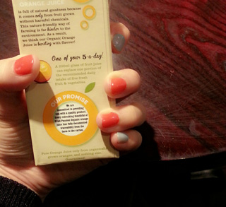

백만년만에 콤콤!!
최근 데일리 패숑
Hobbs Kasia Coat + 청바지/니트 + 깜장어그

Polyvore에서 대충 만들어본 이미지
가방은 내꺼가 없어서 그냥 같은브랜드 깜장거 붙여넣기^^;;
요 복장에서 상의 니트 / 목도리만 바뀐다 ㅋㅋㅋ
1.
깜장어그 한번신으니까 헤어나올수가없다;;
김여사께서 하사하신것으로(이게 어언 3년전^^;;;;)
첨 받았을때는 시큰둥했는데 이제서야 어그의 매력을 깨달았음
폭신하고 따숴 ㅜㅜ 벗을수가없어;;;;
저번주이번주 내리 이것만신고 댕김
2.
새로사온 핑쿠목도리
이거 길이가 넘 길어서 주체가 안된다;;
뚤뚤뚤뚤말아야함;;; 어익후;;;
색은 넘 맘에듬^^;;;

3.
Diesel Faux Fur Overcoat in Pink
가끔 요런 스타일에 쓸모없는 도전정신이 발휘된다^^;;;
(음식으로 치면 '도전메뉴' 일려나ㅋㅋ)
퇴근길에 우연히 발견하구
이거입으면 칼라풀한 복부인이 될수있는거야?
란 생각과 함께 시착해봤지만 안어울려 ㅜㅜ
(....라기이전에 며칠전에 쇼핑끗이라고 하지않았나^^;;;;)

퍼/가죽에 로망이 있지 말입니다 헷헷
하지만 입으면 산적두목.......OTL
4.

마무리는 네일사진으로 :)
오랜만에 색칠했당
맘에들어!!